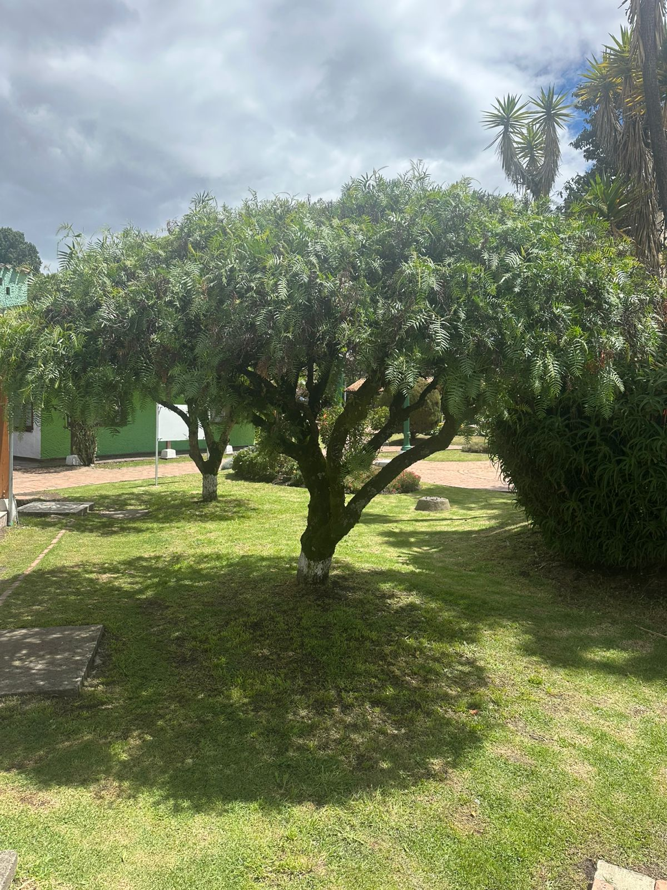

← Volver

Aguaribay
Descripción
Es un arbol perenne (no pierde sus hojas) de crecimiento rapido y aspecto colgante, muy utilizado como ornamental y de sombra. Tiene un tronco retorcido, ramas largas y finas un follaje verde claro que le da un aspecto elegante.
Características
- Altura: 6 - 12 metros, aunque puede alcanzar mas.
- Hojas: Compuestas y colgantes, de color verde claro, con olor fuerte y agradable al frotarlas.
- Flores: Pequeñas, blancas amarillentas.
- Fruto: Pequeña baya roja o rosada de aspecto similar a una pimienta.
Usos
- Sus hojas y corteza se emplean en infusiones para liviar dolores musculares y digestivos
- tiene propiedades anticepticas, antiflamatorias y cicatrizantes
Importancia Ecológica
- Proporciona sombra y refugio a aves y pequeños animales.
- Sus flores atraen abejas y polinizadores.
- Su follaje ayuda a mantener la humedas ambiental en zonas aridas.